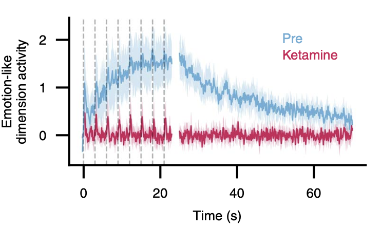
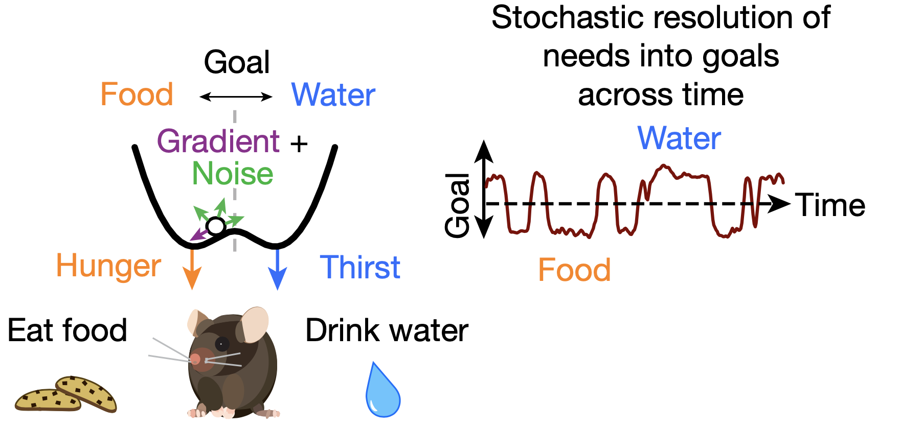
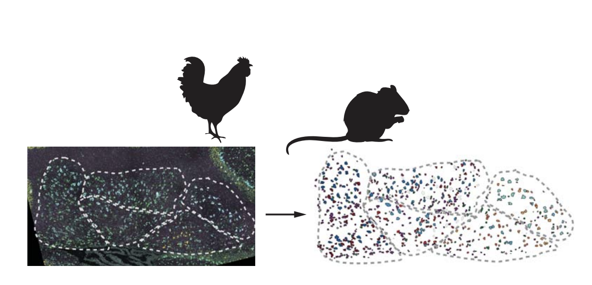
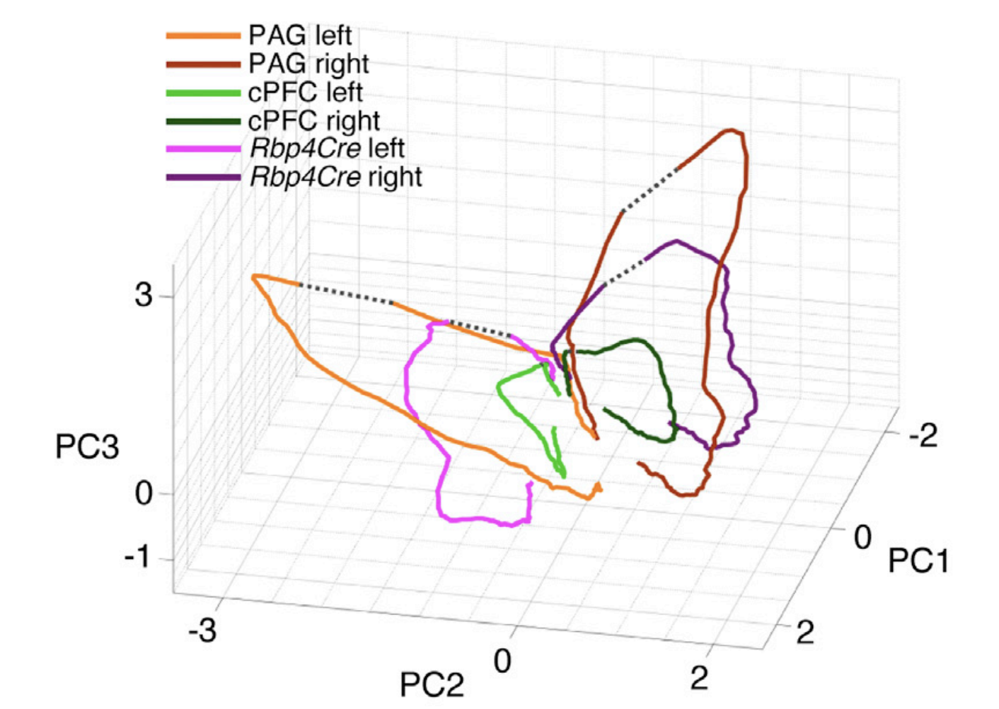
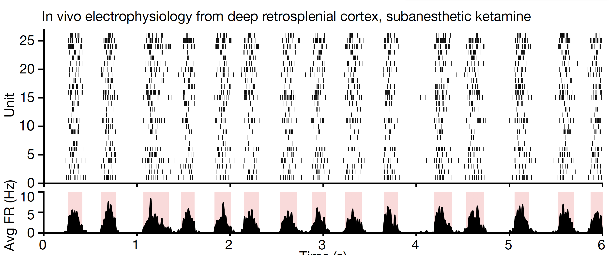
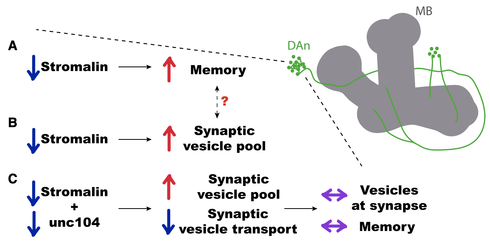
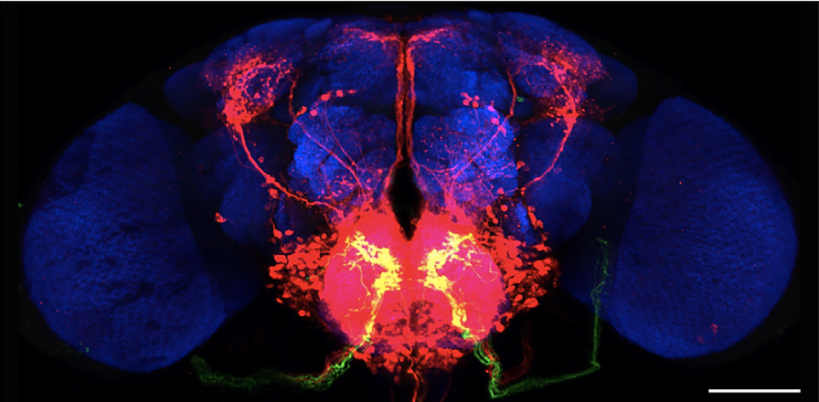
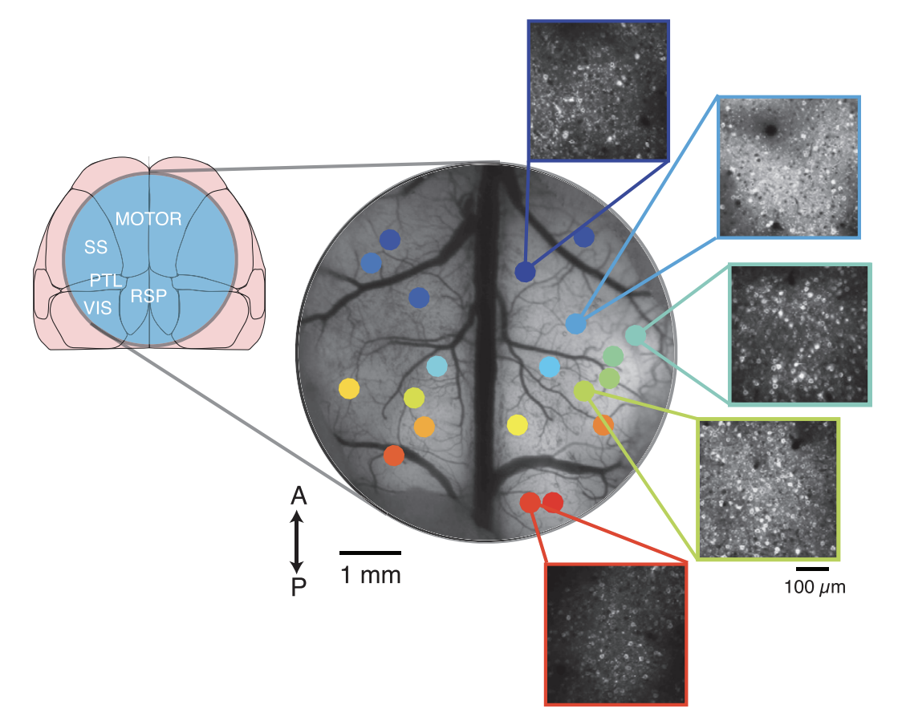

I am currently a Presidential Postdoctoral Fellow with Michael Elowitz at Caltech. I was a PhD candidate in the Stanford University Neurosciences Ph.D. Program, where I was co-advised by Liqun Luo and Karl Deisseroth, with support from the NSF Graduate Research Fellowship. Before that, I worked with Gilad Barnea, where I developed a technique for transsynaptic labeling and manipulation of neural circuits. I graduated from Brown University in 2013 with a degree in Applied Mathematics-Biology, where I focused on synthetic biology, engineering, and machine learning.
My thesis work in the Luo and Deisseroth labs took an integrated systems view of brain states like thirst, hunger, behavioral context, and emotional response. Recording simultaneously at high densitiy across the mouse (and human) brain, I studied the dynamical processes that shape brainwide states. What governs switches between internal states? How do distributed states of neural activity contextualize local circuit function? What mathematical models explain these distributed activity phenomena?







